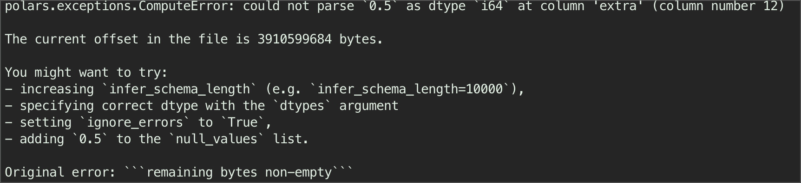
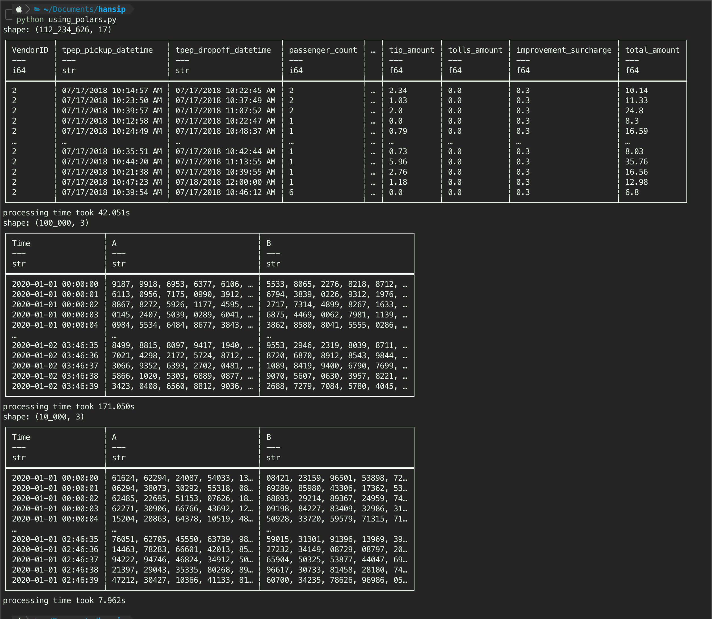
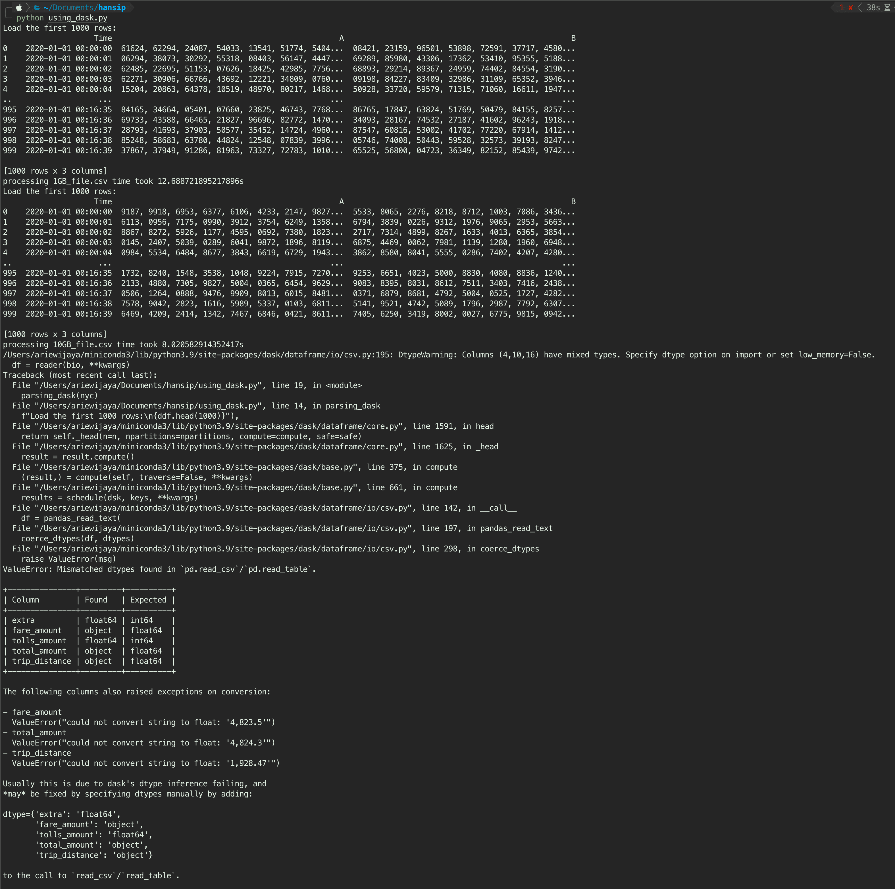

#create dummy dataset
import numpy as np
import pandas as pd
def generate_columns_of_random_numbers(length, total_numbers, rows):
start_date = pd.to_datetime('2020-01-01')
date_columns = start_date + pd.to_timedelta(np.arange(rows), unit='s')
horizontal_lists_1 = np.apply_along_axis(
lambda _: ', '.join(''.join(np.random.choice(
list('0123456789'), length)) for _ in range(total_numbers)),
axis=1,
arr=np.empty((rows, 1))
)
horizontal_lists_2 = np.apply_along_axis(
lambda _: ', '.join(''.join(np.random.choice(
list('0123456789'), length)) for _ in range(total_numbers)),
axis=1,
arr=np.empty((rows, 1))
)
return list(zip(date_columns, horizontal_lists_1, horizontal_lists_2))
#columns each row consists of a horizontal string of random 5-digit numbers
columns = generate_columns_of_random_numbers(4, 10_000, 100_000)
# DataFrame from the columns
df = pd.DataFrame(columns, columns=['Time', 'A', 'B'])
df.to_csv("test.csv", index=False)Where Am I Coming From
For context, this comes as my personal side-project from work. The query was started with parsing multiple CSV files, which one of them being more than 10 Gigabytes in size. If you ask why such a huge file size - there are two reasons.
For one, a subsurface data comes in many type, one of them is image data Figure 1. Image data is basically a list of array, for high resolution data like in subsurface, this list of array can be a thousands values in a single row - hence the huge file size. Secondly, saving it into the most ineffective file format (csv) is not really helping either. These two reasons make the csv file (Figure 2) becomes huge.
Important
Disclaimer: probably not a proper benchmarking from software engineering POV (I am not - but mostly related to my use case.
Larger Than Memory
Without getting into too much details, about 40-50% of RAM size usually the spare of RAM one can use (as we can’t really use the whole RAM otherwise, our laptop would freeze). Larger than memory just means the data we try to keep in the RAM is way bigger than the RAM can handle. A 10GB csv file is definitely larger than 8GB RAM, not to mention not all the 8GB can be used.
Note
There is a swapped memory concept here (since we use fast SSD nowadays), but we would not go there for the purpose of this writing.
Ideally for 10GB csv file, I should have at least 50GB worth of RAM1. So clearly this is something we cannot really handle easily.
Currently the script was run with the de-facto library a.k.a. pandas, so my first instinct was to try different library such as pandas with pyarrow engine, polars, dask, and duckdb. At first one might think one library will rule them all - but that will be a mistake, because just a file size is a poor metric to evaluate how good the library may performs - we will soon see why.
I am running all of these tests offline, in my macbook air M1 8GB RAM, 256GB SSD.
Dummy Data First
Since I can’t really use “actual” data in this writing, I try to simulate as best as I can by creating a dataset consist of three columns, time, and two columns of list array consist of 10,000 values. The file ends up to be 12GB instead of 10GB, but this would do still, so don’t worry.
The above code will generate exactly the csv file I have, 1GB and 12GB file sizes (we can play around with the number of rows to change the file size). The additional 10GB csv on NYC taxi from Kaggle that I put as a baseline/ additional data point cause it has similar file size.
Need to remember that the dummy dataset contains A and B columns where it has array of strings even though the values are in numbers. This is a crucial information and we will back referring this again in the later finding.
So, with everything set up, let the fun begins!
1. Pandas
The original script from my work used pandas as is, without chunks at all, and without using pyarrow as a backend. In the following test, we will try to use both, to see if there is any limitation in handling large dataset.
1.1. Pandas with Pyarrow
The new version of pandas allows us to use pyarrow instead of numpy as a backend, with a promise that it will imporove the parsing speed. Below code was used to do just that, as I am parsing three different files (two dummy files, and one kaggle file). Do beware that after every parsing, I cleanup the memory by deleting the dataframe: del dff.
#using pandas pyarrow
import pandas as pd
import time
#defining file
nyc = "2018_Yellow_Taxi_Trip_Data.csv"
csv_10gb = "10GB_file.csv"
csv_1gb = "1GB_file.csv"
def pandas_arrow(url):
start = time.time()
dff = pd.read_csv(url,
engine='pyarrow'
)
memory_use = dff.memory_usage(deep=True).sum()/1_000_000_000
print(f"{dff}\n{20*'--'}\n")
print(f"memory use = {memory_use:.3f} Gb")
print(f"processing time = {time.time() - start:.3f}s\n")
del dff #cleanup RAM
#running in three csv
pandas_arrow(csv_1gb)
pandas_arrow(csv_10gb)
pandas_arrow(nyc)The result shows both dummy csv with more than 10GB of data parsed successfully, while the nyc csv is failed - likely because out of memory. Using pandas with pyarrow, the 1GB dummy data parsed within 4s, 12GB within 379s (almost 100x longer than 1GB).
1.2. Pandas with Chunks
Pandas with numpy backend, although not as fast as pyarrow, offers a benefit of using chunksize in the parameters, to load the data into memory in “chunks” of the total data, portion not the entire thing. This helps effective parsing, and avoid killing the RAM early.
import pandas as pd
import time
#defining file
nyc = "2018_Yellow_Taxi_Trip_Data.csv"
csv_10gb = "10GB_file.csv"
csv_1gb = "1GB_file.csv"
def parsing_pandas(url):
start = time.time()
chunksize = 10_000
dff = pd.DataFrame()
for chunk in pd.read_csv(url,
chunksize=chunksize,
low_memory=False
):
dfx = chunk
dff = pd.concat([dff, dfx])
del dfx
memory_use = dff.memory_usage(deep=True).sum()/1_000_000_000
print(f"memory use = {memory_use:.2f} Gb")
return dff, print(dff), print(f"processing {url} time took {time.time() - start}s")
#running in three csv files
parsing_pandas(csv_1gb)
parsing_pandas(csv_10gb)
parsing_pandas(nyc)Works on my dummy dataset, however - there is no autodetection on datatype, unlike the next two libraries. This means, each of column will be treated as they were a string object - highly ineffecient.
It also failed in parsing nyc dataset. Ended up killing the process. I don’t have the answer why - but I would argue that the number of columns also affect the pandas performance quite a bit, and the memory just failed even after using chunks.
It may works, but you really have to pay attention to the memory, and making sure we were using the best balanced chunks size parameter - doable, but tricky.
2. Duckdb
These last two are the best library I have seen so far in handling large dataset. The first library is Duckdb, a library based on SQL, a language optimized for query. Duckdb, unlike any other SQL library, it does not need a defnitive database- until we told it to.
import duckdb
conn = duckdb.connect()
import time
nyc = "2018_Yellow_Taxi_Trip_Data.csv"
csv_10gb = "10GB_file.csv"
csv_1gb = "1GB_file.csv"
start = time.time()
#defining function to parse csv
def parsing_csv_duckdb(csv_dir):
# Define the query dynamically
start = time.time()
query = f"""
SELECT *
FROM read_csv_auto('{csv_dir}')
;
"""
# Execute the query
result = duckdb.sql(query)
return result.show(), print(f"Processing {csv_dir} time is {time.time() - start:.2f}s")
# Call the function with the provided variables
parsing_csv_duckdb(csv_dir=nyc)
parsing_csv_duckdb(csv_dir=csv_10gb)
parsing_csv_duckdb(csv_dir=csv_1gb)Now, my first instinct is saying that it will be able to load the nyc taxi dataset - which it did, at some speed too! However, the most interesting part is, it was parsing the dummy dataset at slower speed than pandas! This is more significant (up to 5x slower than pandas) on the 10GB csv file! See below:
- Duckdb 10GB CSV file -> 128s, whereas Pandas is 105s -> 20% faster
- Duckdb 1GB CSV file -> 53s, whereas Pandas is 10s -> 500% faster
Another important observations are:
- Duckdb autocsv detection succeed to detect columns dtype with good accuracy (varchar, double, int64). Spoiler alert, this will be a recurring theme from this point onwards.
- While it succeed detecting the Time column to be timestamp dtype, it is also classify the A and B columns as string (varchar) as expected. This maybe the reason why duckb is parsing CSV from dummy dataset slower than pandas with chunk setting.
3. Polars
Polars is another dataframe library just like pandas, unlike duckdb that was based on SQL language, Polars is pretty much the distant brother of Pandas. Although the syntax are not exactly the same, but you will not feel out of place using Polars once we get a grip on its philosophy (expressive language).
There are four things I valued in Polars:
- It was built on Rust language with python binding - zero dependencies.
- It was built on Rust language - a low level language - faster runtime compared to pandas.
- It uses no index! I like index when trying to slicing stuffs, but this concept is more of a hassle than a helper.
- It encourage the use of expressive method naming, e.g. it encourage user to use
.geas opposed to>=,selectto select multuple columns rather than using double square-bracket[["some list of columns"]]to filter a columns.
3.1. Eager Evaluation
Polars has two mode when it comes to processing, one is eager mode where everything will be run in one go - as instructed by the user (based on code sequence). Or, using lazy mode where the query will then be optimized in the background - and will not be returned until user decided to do so (collect).
I have a feeling that since the code is fairly simple - I do not think it will give much of a difference to choose one over another.
Below is the eager evaluation where we need to be careful and make sure that either we put ignore_errors=True, or increase the infer schema length. Polars error message Figure 3 is the best I have seen - provides a real practical solution to the error. In this case, the error is caused by one value where the number is decimal, inside a column 12 where most of them are integer - so polars think it should not be int64. I chose to use ignore_errors=True.

Another suggestion from the offical docs is - whenever we need to use polars for benchamarking, we need to set rechunk=False, I tried both (with and without), and surprisingly it runs faster without rechunk set as False, especially on the 10GB csv file - by about 1-4ms faster (e.g., 111ms vs 114ms). TBH, It does not really matter in this case, so I leave it at False.
import polars as pl
import time
#defining file
nyctaxi_10gb = '2018_Yellow_Taxi_Trip_Data.csv'
csvFile_10gb = '10GB_file.csv'
csvFile_1gb = '1GB_file.csv'
def parsing_polars(url):
start = time.time()
dff = (pl.read_csv(url, rechunk=False,
ignore_errors=True
))
print(dff)
print(f"processing time took {time.time() - start:.3f}s")
#running in three csv
parsing_polars(nyctaxi_10gb)
parsing_polars(csvFile_10gb)
parsing_polars(csvFile_1gb)Observations:
So the polars library can handle three csv as expected, just like duckdb. However, as I mentioned earlier, the duckdb is the best at identifying a time-format automatically from a csv file. This time around, polars has to give it to duckdb, because even polars still detecting the
tpep_pickup_datetimein nyc dataset asstring.Another worthy mention is, it took polars close to 50s to what duckdb 0.26s, it is not even a comparison. Parsing nyc dataset, duckdb is just trashed polars in simple parsing test.
3.2. Lazy Evaluation
As mentioned before, the second mode that polars offers is lazy evaluation - where the query will be optimized in the background before users decided to collect the query at the end using ‘collect()’ method. To optimize this, I also set the streaming=True. The code is similar to before, but now with ‘scan_csv’ instead of ‘read_csv’.
import polars as pl
import time
#defining file
nyctaxi_10gb = '2018_Yellow_Taxi_Trip_Data.csv'
csvFile_10gb = '10GB_file.csv'
csvFile_1gb = '1GB_file.csv'
def parsing_polars(url):
start = time.time()
dff = (pl.scan_csv(url, rechunk=False,
ignore_errors=True
))
print(dff)
print(f"processing time took {time.time() - start:.3f}s")
#running in three csv
parsing_polars(nyctaxi_10gb)
parsing_polars(csvFile_10gb)
parsing_polars(csvFile_1gb)

My experience, if the query is simple - it tends to same/slower down the runtime, so just run read_csv is better as you don’t have to think about collecting the result at the end. See Figure 5, it runs faster on the nyc dataset by a slight amount (48s eager vs 42s lazy) - call it a tie.
4. Dask
Dask is another dataframe library, but it is basically pandas in steroid. Instead of using a single-threaded core in computation, dask uses paralel computation. By default it uses lazy evaluation - and compute() method to finally query the result. The idea sound simple - pandas in multi-threaded cores, but that means whatever things we see in pandas will appear again e.g., indexes, dependencies to name a few.
The runtime is fast, as we can see in Figure 6, dask parsed 10GB csv file in 12s, and 1GB file in 8s - a comparable performance to polars and duckdb. However,there is also errors related to dtypes when trying to parse nyc dataset - so, pick your poison.

Verdict
Compiling all the performance runtime on each individual test as follows:
import pandas as pd
import numpy as np
import matplotlib.pyplot as plt
result = {
'Method' : ['Pandas with Pyarrow',
'Pandas with Chunk',
'Duckdb',
'Polars Eager',
'Polars Lazy',
'Dask'
],
'1GB(s)' : [4, 10.3, 53, 7.4, 7.96, 8],
'10GB(s)' : [378.5, 105.6, 128.4, 116.7, 171, 12.7],
'NYC(s)' : [np.nan, np.nan, 0.26, 48.6, 42, np.nan],
'Library': ['pandas', 'pandas', 'duckdb', 'polars', 'polars', 'dask']
}
df_result = pd.DataFrame(result)
df_result
df_result.plot(kind='barh', x='Method')
# plt.xscale('log')
plt.show()Based on the Figure 7 below, and considering all the csv files, take it as you want, but my thoughts are:

- DuckDB and Poilars are the only two libraries that perform very well in all csv file sizes (1GB to 10GB).
- For well-formatted CSV with large size (10GB), duckdb will be the best library.
- For everything else, polars is good enough - especially for a smaller file size (1GB range).
- For relatively low number of columns, and file size around 1GB, use pandas with chunksize or dask.
- Don’t use pandas with pyarrow. LOL
TLDR;
flowchart LR
A[CSV Filesize] --> B{Around 10GB}
B --> |No, Around 1GB| C[Polars, Pandas with Chunksize]
B --> |Yes| D{Well-formatted CSV}
D --> |Yes| E[DuckDB]
D --> |No| F[Polars]
Footnotes
“Have 5 to 10 times as much RAM as the size of your dataset” (Wes Mckinney)↩︎
Citation
BibTeX citation:
@online{arie_wijaya2024,
author = {Arie Wijaya, Aditya},
title = {Parsing 10+ {GB} {CSV} File in {Python} - {Larger} Than
{Memory}},
date = {2024-05-19},
url = {https://adtarie.net/posts/20240215-parsing-csv-largerthanmemory/},
langid = {en}
}
For attribution, please cite this work as:
Arie Wijaya, Aditya. 2024. “Parsing 10+ GB CSV File in Python -
Larger Than Memory.” May 19, 2024. https://adtarie.net/posts/20240215-parsing-csv-largerthanmemory/.